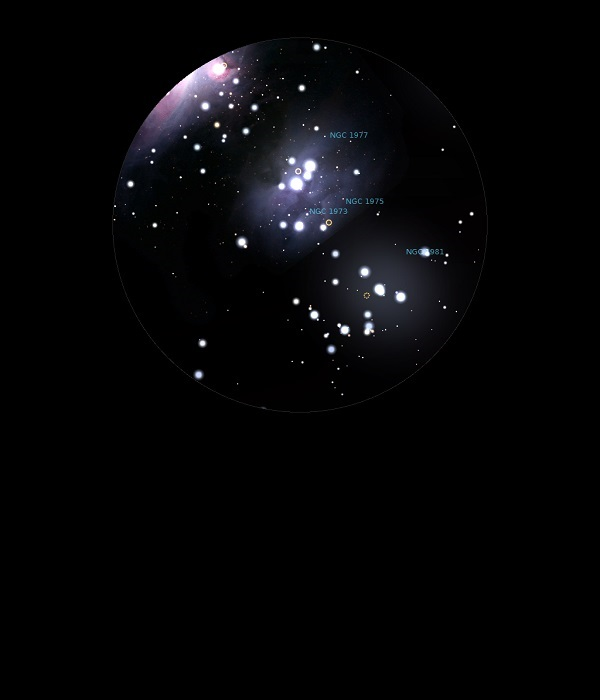

NGC 1973
Bright Nebula in Orion
NGC 1973
Mag 7.0
16/01/15
Part of the group of nebula including NGC 1975 and NGC 1977,
visible in 18mm with UHC filter
08/12/15
Faint nebula around a Mag 7.30 star which gives it a ghostly
glow in 12mm
Part of The Running Man Nebula, NGC 1977
10/02/16
Part of NGC 1977, and centered around a Mag 7.30 star which
forms the front hip of The Running Man asterism's front leg
Not large or bright but distinct in both 12mm and 18mm
The 18mm gives a nice dark FOV within which NGC 1973 sits